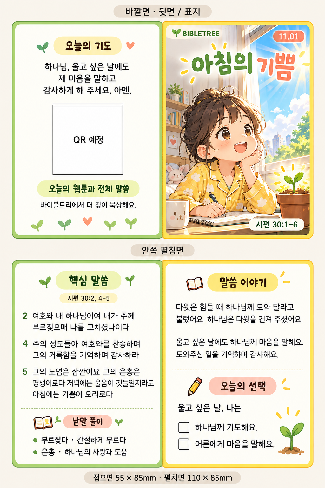
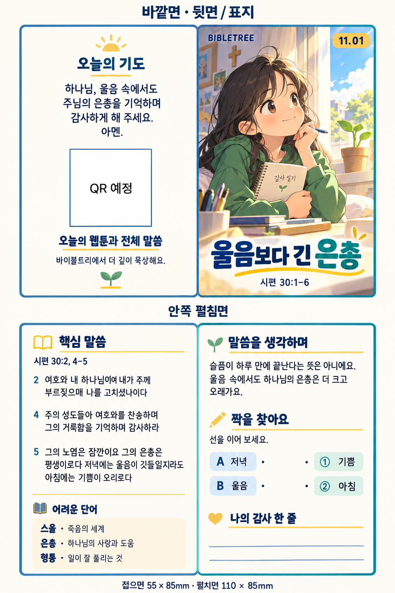

표지, 시편 30:3–5 핵심 구절과 단어, 짧은 해설·활동, 기도와 QR을 네 면에 담습니다.
2026.11.01 · 시편 30:1–6
접는 카드에서
모바일 묵상으로
작은 카드에 핵심 말씀을 담고, QR로 새싹이 웹툰과 전체 본문·활동·기도까지 이어지는 하루 묵상을 제안합니다.
4면 반접이 카드 · 55×85mm저학년 / 고학년문구·신학 검토 중Proposal
한 장의 카드, 이어지는 말씀
인쇄 카드와 웹 화면의 역할을 나누어 구성합니다.
새싹이 웹툰 6컷으로 문을 열고, 전체 본문과 단어·활동, 기도로 이어집니다.
다윗을 건지신 하나님, 예수님의 십자가와 부활, 부활하신 예수님 안의 소망을 중심에 둡니다.
Card concepts
저학년 · 고학년 카드 시안
기존 4면 디자인을 펼친 모습으로 비교합니다.
아침의 기쁨
저학년
레이아웃 참고 시안 · 구속사 문구, 새싹이 그림, 실제 QR 반영 전
- 표지 · 제목, 날짜, 말씀 범위
- 안쪽 · 시편 30:3–5 핵심 말씀, 쉬운 낱말, 복음 해설과 질문
- 뒷면 · 예수님의 부활 소망을 담은 기도와 실제 QR
울음보다 긴 은총
고학년
레이아웃 참고 시안 · 핵심 구절 범위, 복음 문구, QR 수정 필요
- 표지 · 제목, 날짜, 말씀 범위
- 안쪽 · 본문 관찰, 단어, 구원과 부활의 연결, 묵상 질문
- 뒷면 · 부활 소망의 기도와 실제 QR
11월 1일 · 시편 30:1–6
KRV 본문과 낱말 풀이
다윗의 구원 노래가 예수님의 부활 소망으로 이어져요.
기도 한 문장과 실제 연결 QR
Mobile experience
QR을 찍은 다음 화면
아래 미리보기에서 저·고학년 화면을 바꿔 볼 수 있습니다.
웹 화면 미리보기
web-demo/?age=lower새 창에서 웹 시연
저학년 웹 시연 QR
휴대폰 카메라로 열면 새싹이 웹툰부터 볼 수 있어요.
고학년 웹 시연 QR
공개 미리보기 주소로 연결됩니다.
이번 제안의 기준
- 카드: 반접이 4면, 접었을 때 55×85mm
- 카드에는 핵심 3–5절, 전체 본문은 웹
- 웹툰 그림과 문장은 화면에서 분리해 읽기 쉽게 표시
최종 전 확인할 점
- 현재 카드 그림은 레이아웃 시안이며 QR은 빈 자리입니다.
- 시안의 핵심 구절은 2, 4–5절로, 제안 범위인 3–5절로 고쳐야 합니다.
- 개역개정 사용 허가와 본문 데이터, 최종 신학·문안 검토가 필요합니다.
이 페이지와 동봉한 웹 화면은 제안용 미리보기이며 운영 바이블트리 웹에는 반영하지 않았습니다. 카드 이미지는 기존 디자인 참고본으로, 인쇄용 최종 조판 파일이 아닙니다. 공개 전에 개역개정 본문 출처·사용 허가와 최종 신학·문안 검토가 필요합니다.